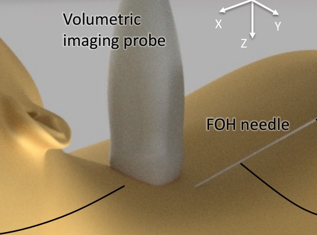
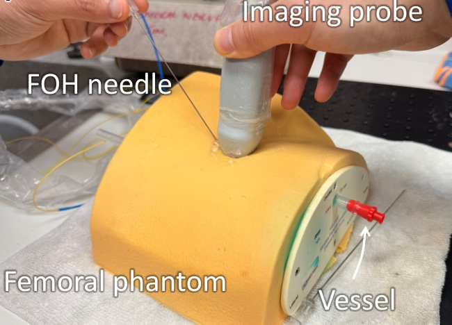
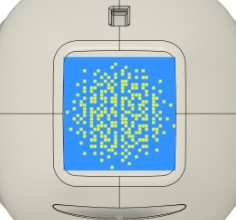

Personal product · 2026
Good Die善终
A calm space for saying what matters before it is too late: wishes, letters to loved ones and the people you trust, one small step at a time.


I turn medical research into things people can use, from fibre-optic needle tracking to trustworthy AI for dentistry.

I founded the DeepTech Founders’ Club under the Outstanding Young Scholars Society (OYSS) UK, a society of Chinese scholars and entrepreneurs in the UK led by Prof Sai Gu FREng, Deputy Pro-Vice-Chancellor (East and South East Asia) at the University of Warwick. The club brings together 3,000+ researchers, founders, investors and industry partners to get more deep tech out of universities.
An Imperial College spinout developing a robotic prosthetic arm, from my MRes in Medical Device Design & Entrepreneurship. My first venture: I did the market research and business plan and pitched it.
A calm space for saying what matters before it is too late: wishes, letters to loved ones and the people you trust, one small step at a time.
AI that helps dental clinicians check their own records for gaps and risks, developed with clinicians and industry partners as Software as a Medical Device. More to share soon.
AI + AR support for stroke patients after hospital discharge.
Cambridge RealityX · Track WinnerAn AI-generated music platform.
An accountability community for early risers.
A needle that tells the scanner where it is.
Under ultrasound, a needle tip is easy to lose. I built fibre-optic transducers that sit inside the needle and talk to the probe, so the tip can be located in 3D, in real time, on a volumetric image.
I validated the system on a femoral nerve block simulator, a step towards safer regional anaesthesia.



Figures from Liang W. et al., IEEE Sensors Journal (2026), arXiv:2509.11310.
6 first-author and 7 collaborative works in total. The full list is in my CV.
I’m glad to talk with founders, investors, clinicians and researchers.